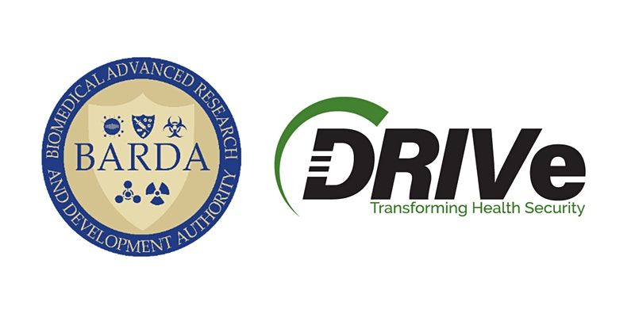

BARDA Ventures and Global Health Investment Corporation (GHIC) Partnership

A message from Gary Disbrow, Director HHS / ASPR / BARDA
(Biomedical Advanced Research and Development Authority)
A message from DRIVe Director, Dr. Sandeep Patel
BARDA Ventures, extends BARDA’s core principle of public-private partnerships to the investment community, creating, for the first time at HHS, a venture-style partnership that can make quick, agile investment decisions and de-risk transformative technologies so that they can be used for health security needs.
Under this new program, BARDA will be working with a nonprofit partner, Global Health Investment Corporation (GHIC), to accelerate the development of medical countermeasures that address gaps in health security as well as meet commercial market needs.
GHIC will launch a global health security fund using BARDA Ventures funds as well as matching capital from other investors. As the technologies and companies generate investment returns, proceeds will be returned to GHIC for reinvestment. This structure will help establish sustained and long-term investments in technologies critical for combatting future public health threats.
- HHS Secretary Xavier Becerra
1 June 2021
The Managing Entity is the nonprofit organization that will carry out the objectives of this partnership by sourcing of technologies or companies, implementing management, investment, development, and commercialization strategies with the ultimate goal of impacting the rapid development of treatments, tools, and technologies to enhance and fortify the United States’ preparedness posture against known and unknown threats, including SARS-CoV-2 and future emerging infectious diseases.
While the amount of capital being managed and invested by the Venture Capital industry is at an all-time high, there is a noticeable lack of sustained long term investment, from the Venture Capital community, in technologies that can prepare the United States and the world for emerging infectious diseases and broader health security threats.
The investments made by the managing entity must fall within the BARDA mission of health security and pandemic preparedness. A Joint Oversight Committee comprised of USG personnel and the Managing Entity and will collectively set the priority for investments in high level terms, and will agree upon technology areas to pursue that are within the BARDA mission space.